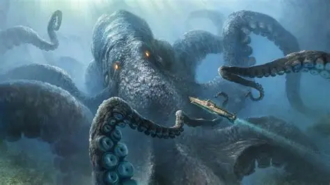
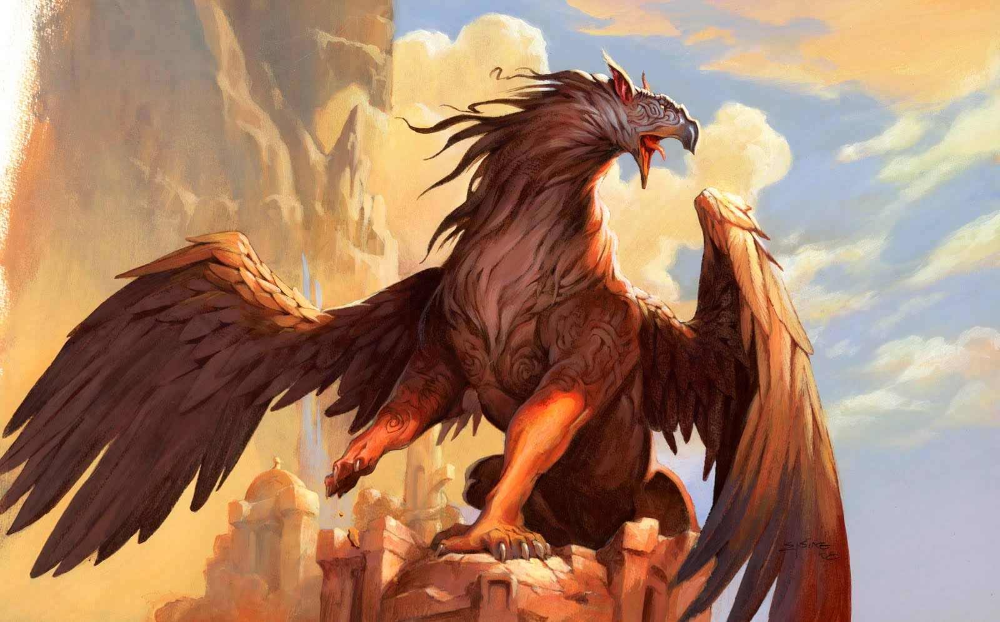
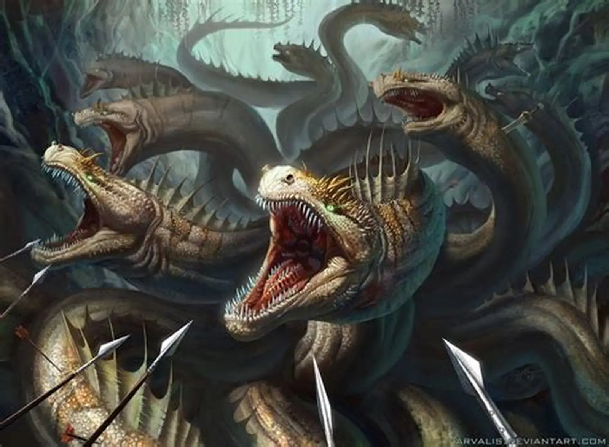
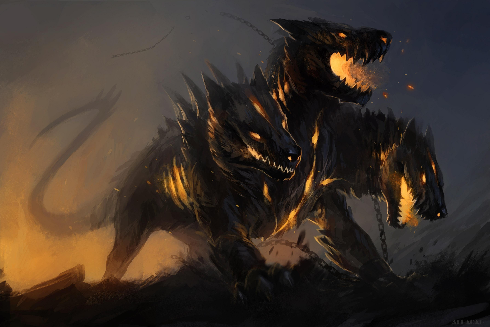

Fictional Creatures List:
1. The Basilisk (European Mythology)

The Basilisk is a serpentine reptile known as the "King of Snakes." It is lethally dangerous because its stare—the death-gaze—can instantly kill any living thing. It is also highly venomous and is said to hatch from a rooster's egg.
2. The Kraken (Norse Folklore)
This creature is a colossal sea monster, typically described as an immense squid or octopus. It is so large that its body can be mistaken for an island by sailors. The Kraken is feared for its ability to drag down entire ships with its massive tentacles and create deadly whirlpools.
3. The Phoenix (Greek Mythology)

An immortal bird associated with the sun, the Phoenix lives for centuries before its life cycle ends. It immolates itself in a nest of flame, and a new, young bird arises from the ashes. This makes the Phoenix a powerful symbol of cyclical renewal and rebirth.
4. The Griffin
The Griffin is a majestic hybrid with the head, wings, and talons of an eagle and the body and hind legs of a lion. It symbolizes strength and guardianship. In folklore, Griffins were often said to be fiercely protective of treasures.
5. The Golem

The Golem is an artificially created, human-like being typically formed from clay or mud. Activated by ritual or mystical writing, the Golem serves as an immensely strong protector but lacks a soul, free will, or the ability to speak.
6. The Hydra (Greek Mythology)
The Hydra is a gigantic, serpentine monster with multiple heads. The creature's most terrifying feature is its ability to grow two new heads for every one that is cut off. It also possessed venomous breath and blood. The Hydra was famously defeated by Hercules.
7. The Cerberus (Greek Mythology)
Cerberus is the gigantic, monstrous three-headed watchdog of the underworld. It guards the gates of Hades to prevent the dead from leaving and to stop the living from entering. It is characterized by its snarling heads, snake-like tail, and powerful claws.